LESSON 04 · SYMMETRY & POINT GROUPS
分子对称性与点群
把“看起来对称”变成一套可运算的语言：识别对称操作、沿判定树确定点群，再把点群用于极性、手性、轨道成键与振动光谱。
1. 为什么化学要研究对称性
分子对称性不是几何鉴赏，而是一种信息压缩工具。只要知道分子的点群，就能迅速排除不可能的偶极矩方向，判断分子是否可能具有手性，给原子轨道、配体群轨道和分子振动贴上对称性标签，并预测哪些轨道可以相互作用、哪些振动能出现在红外或 Raman 光谱中。点群不会直接给出能量数值，但它常能在计算之前先回答“允许还是禁止”。
所谓对称，是对物体执行某种操作后，它与操作前不可区分。这里“不变”不是所有原子都停在原位，而是同种原子可以互换，最后的核构型与原来完全重合。例如 NH₃ 绕穿过 N 和三角形中心的轴旋转 120°，三个 H 彼此换位，但整个分子仍不可区分，因此该转动是对称操作。
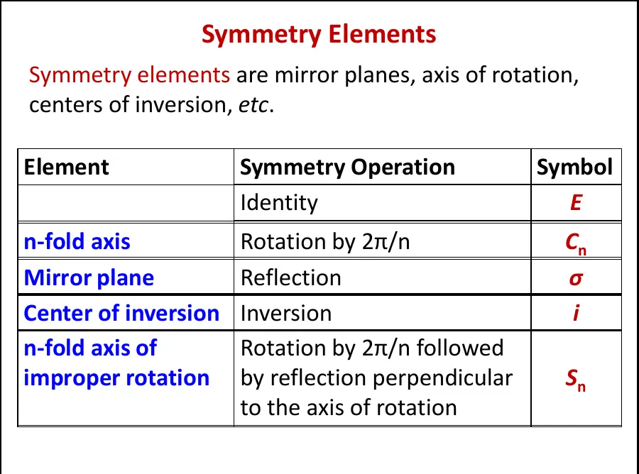
2. 对称元素与对称操作必须区分
对称元素（symmetry element）是操作所依赖的几何对象，如轴、平面或点；对称操作（symmetry operation）是绕轴旋转、关于平面反射等动作。C₃ 既常被用来简称三重旋转轴，也可表示旋转 120° 的操作，语境中应分清。例如“NH₃ 具有一根 C₃ 轴”说的是元素；“执行 C₃ 后 H₁→H₂”说的是操作。
一个点群包含的不是孤立图标，而是一组在复合下封闭的操作。例如 C₂v 的 E、C₂、σv(xz)、σ′v(yz) 中，连续执行两个镜面对称等价于执行 C₂。正是这种“操作之间可以相乘”的结构，使群论能以矩阵和特征标表处理化学问题。
3. 正旋转 Cn：先找最高阶主轴
若绕某轴旋转 360°/n 后分子不变，该轴为 n 重轴 Cn。同一根几何轴可能同时对应多个操作：一根 C₆ 轴还具有 C₆²=C₃、C₆³=C₂ 等操作。判定点群时以最高 n 的轴作为主轴，通常规定为 z 轴。
BF₃ 的分子平面法向是一根 C₃ 主轴；此外，平面内还有三根穿过 B 和一个 F 的 C₂ 轴。只找到 C₃ 还不能结束：这三根与主轴垂直的 C₂ 正是把它从 C 类推入 D 类的关键。NH₃ 同样有 C₃ 主轴，却没有与其垂直的 C₂，因此属于 C₃v 而非 D₃ 类。
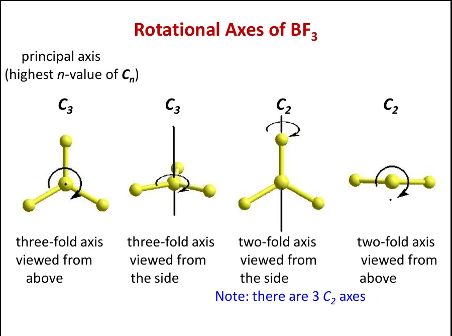
实用技巧
不要只盯着键。旋转轴可以穿过原子、键中点、面中心或整个多面体的中心。对平面正多边形，垂直于分子平面的轴通常是最高阶主轴；对配位多面体，要同时检查穿过相对顶点、相对边和相对面的方向。
4. 三种镜面：σh、σv 与 σd
镜面下标永远相对于主轴定义。σh（horizontal）垂直于主轴；σv（vertical）包含主轴；σd（dihedral）也包含主轴，但它还要平分两根相邻、垂直于主轴的 C₂ 轴之间的夹角。因此 σd 不是“斜着画的 σv”，而是依赖 D 类点群中那组 C₂ 轴关系的特殊垂直镜面。
水分子的 C₂ 主轴位于分子平面内并穿过 O、平分 H–O–H 角；分子平面和垂直于分子平面且包含 C₂ 的平面都是 σv。它没有 σh，因为垂直于 C₂ 的镜面会把 H 映到不存在的位置。BF₃ 的分子平面垂直于 C₃，故为 σh；三个包含 B–F 键与 C₃ 的平面是垂直镜面。
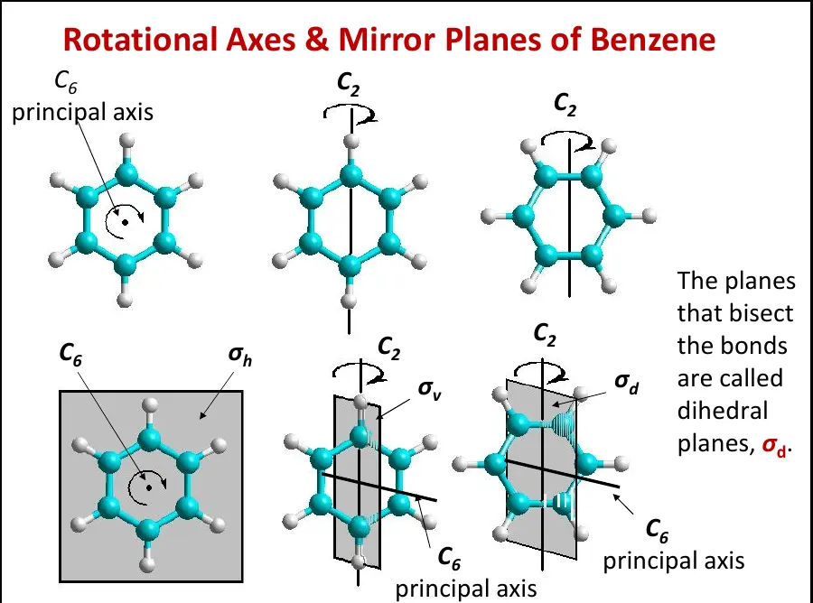
苯的 σd 到底是哪一个？
把 C₆ 作为竖直主轴。若把穿过一对相对 C 原子的三根平面内 C₂ 记作 C₂′，那么包含 C₆ 并穿过两条相对 C–C 键中点的三个平面平分相邻 C₂′ 轴之间的夹角，因此是 σd；包含相对 C 原子的三个平面则可记作 σv。教材若交换 C₂′/C₂″ 的命名约定，先看它是否“平分相邻垂直 C₂ 轴”即可，不要只背图。
5. 反演 i：穿过中心、距离相等、方向相反
反演把坐标 (x,y,z) 映为 (−x,−y,−z)。检查时，从任一原子向候选中心画直线，穿过中心后在相同距离处必须找到相同元素且处于等价环境。反演不是旋转 180°：C₂ 只改变垂直于轴的两个坐标，而 i 同时改变三个坐标。
线性同核双原子分子 N₂、O₂、H₂ 具有位于键中点的反演中心；CO、HCN 没有，因为反演会把不同元素互换。八面体 Cr(CO)₆ 具有位于 Cr 的反演中心，每个 CO 配体都映到反向配体。H₂O 没有 i；苯有 i，位于环中心。
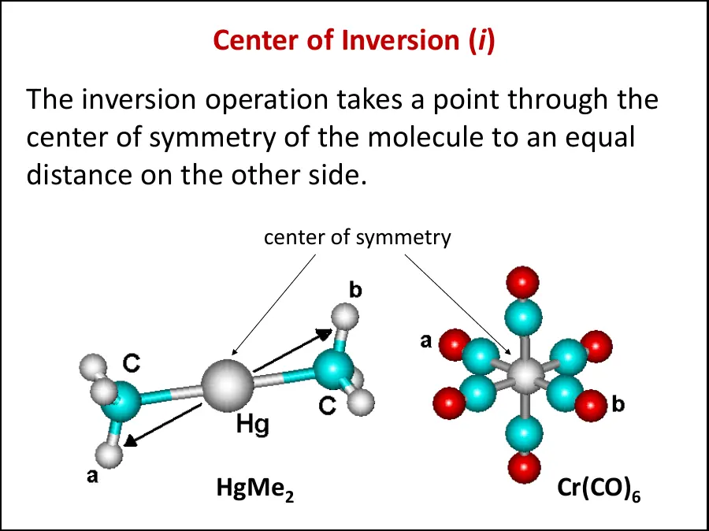
反演中心在光谱中有强烈后果：具有 i 的分子满足互斥规则，即同一正常振动不可能同时为 IR 和 Raman 活性。这并不意味着整个分子“没有 IR”或“没有 Raman”，而是同一个模式的两种活性互斥。
6. 非真旋转 Sn：为什么它补全了手性判据
Sn（improper rotation，旋转-反射）由两步组成：先绕轴转 360°/n，再关于垂直于该轴的平面反射。任何一步单独都不一定是对称操作，只要求两步复合后的结构与原来不可区分。S₄ 常见于某些扭曲四面体、平方反棱柱或配合物构象中。
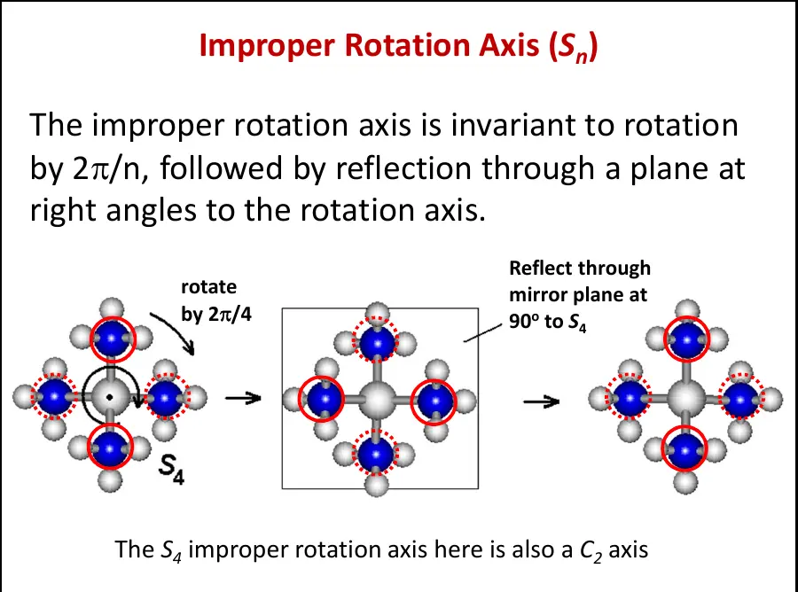
两个特殊关系必须记住：S₁ 等于 σ，因为旋转 360° 什么也没改变，只剩反射；S₂ 等于 i，因为先旋转 180°再关于垂直平面反射，最终三个坐标全部变号。由此得到最紧凑的手性判据：分子若含任意 Sn（包括作为 S₁ 的镜面和作为 S₂ 的反演中心），必不具有静态构型手性；反过来，缺少所有 Sn 才可能是手性的。
为什么 E、Cn、σ、i、Sn 足够？欧氏空间中保持距离的有限刚体变换可按行列式分为保持取向的正操作和反转取向的非正操作。固定一点的正操作可以表示为绕某轴旋转；非正操作可表示为一次旋转与垂直反射的复合，即 Sn。σ 与 i 又是其特殊情形，因此这套元素覆盖了有限分子的所有点对称操作。
7. C 类与 D 类点群：最关键的一处分流
C 与 D 的区别并不由镜面决定，也不取决于分子“像不像棱柱”。找到最高阶主轴 Cn 后，必须继续寻找与它垂直的 C₂ 轴：若不存在这样的一组 C₂，进入 C 类；若存在 n 根垂直 C₂，进入 D 类。这个判断永远先于 h、v、d 后缀。
C 类
以一根 Cn 主轴为核心，但没有 n 根垂直于主轴的 C₂。随后依据镜面分成 Cn、Cnv、Cnh。
D 类
具有一根 Cn 主轴和 n 根垂直 C₂。随后依据镜面分成 Dn、Dnh、Dnd。
7.1 Cn：只有主旋转轴的循环群
Cn 群的非平凡对称性只围绕一根 Cn 主轴展开，没有横向 C₂，也没有 σv 或 σh。例如 C₃ 群的操作为 E、C₃、C₃²；C₃² 表示沿同一轴再转一次 120°，即总计转 240°。这类分子常呈螺旋桨状：旋转能使各叶片互换，但任何反射都会改变其旋向。因为 Cn 只包含恒等与正旋转操作，所以 Cn 分子可能具有手性，也允许沿主轴方向存在永久偶极矩。
7.2 Cnv：主轴加 n 个垂直镜面
Cnv 具有一根 Cn 和 n 个包含主轴的 σv，但没有 n 根横向 C₂。H₂O 是 C₂v：有一根 C₂，分子平面和垂直分子平面的平分面都是 σv。NH₃ 是 C₃v：有一根 C₃ 和三个 N–H 所在的 σv，却没有三根横向 C₂。VOF₄ 的四方锥结构则是 C₄v。
这里最易误判的是 NH₃。虽然从 C₃ 方向看三个 H 呈正三角形，但绕任何横向轴转 180° 都不能使顶部 N 与 H 平面保持等价，因此它不是 D₃。Cnv 允许偶极矩沿主轴方向存在，所以 H₂O、NH₃ 均可为极性分子；但含镜面意味着它们不具有构型手性。
7.3 Cnh：主轴加水平镜面
Cnh 具有一根 Cn 和一个垂直于主轴的 σh，但仍然没有 n 根横向 C₂。Cn 与 σh 的复合通常还会生成 Sn 等操作，因此不能把点群理解成只含名称中直接写出的两个元素。例如 C₂h 的完整操作为 E、C₂、i、σh，其中 i=C₂σh。
判断时要警惕“看见 C₃ 和 σh 就写 C₃h”。BF₃ 虽然具有 C₃ 与分子平面 σh，但还存在三根平面内、垂直于 C₃ 的 C₂，因此应先归入 D₃，再写成 D₃h。Cnh 中的 σh 会使沿主轴的偶极矩反向，所以通常不允许永久偶极矩。
7.4 Dn：主轴外再有一圈横向二重轴
D 来自 dihedral。Dn 至少包含 Cn 主轴与 n 根垂直 C₂，但没有 σh 或 σd。以 D₃ 为例：若找到一根横向 C₂，再用主轴 C₃ 把它依次旋转 120°，便生成另外两根横向 C₂。[Co(en)₃]³⁺ 的理想构型属于 D₃，可形成 Δ 与 Λ 对映体；它没有任何 Sn、镜面或反演中心。
Dn 只含正旋转操作，因此也可能具有手性。但所有 D 类都不允许永久偶极矩：若偶极沿主轴，一根横向 C₂ 会把它翻转；若偶极垂直主轴，Cn 又会改变它的方向。只有零矢量才能在全部 Dn 操作下保持不变。
7.5 Dnh：D 骨架加水平镜面
Dnh 具有 Cn、n 根横向 C₂ 和 σh。BF₃ 为 D₃h，苯为 D₆h，XeF₄ 为 D₄h，CO₂ 为 D∞h。σh 与已有旋转操作组合后，群中通常还会出现 σv、σd、i 或 Sn；具体是否含 i 与 n 的奇偶和几何有关，不能只凭后缀 h 一概而论。
BF₃：为什么不是 C₃h？
第一步找 C₃；第二步不要急着看镜面，而是找横向 C₂。BF₃ 分子平面内有三根穿过 B 与某个 F 的 C₂，于是先确定 D₃。第三步发现分子平面垂直于 C₃，是 σh，最终得到 D₃h。
苯：为什么是 D₆h？
环面法向为 C₆；平面内有六根垂直于 C₆ 的 C₂，先得到 D₆；环平面为 σh，所以是 D₆h。苯还具有 i、σv、σd 和多种 Sn，但这些是完整群结构的一部分，不必逐一写进点群名称。
7.6 Dnd：没有 σh，改由 σd 平分横向 C₂
Dnd 具有 Dn 的主轴和横向 C₂，但没有 σh；它具有 n 个包含主轴并平分相邻横向 C₂ 夹角的 σd。交错乙烷为 D₃d，交错二茂铁为 D₅d，平方反棱柱 [ZrF₈]⁴⁻ 为 D₄d，allene 的理想结构为 D₂d。
σd 不能仅凭“平面是斜的”判断。它必须同时满足两点：包含主轴，并平分两根相邻横向 C₂ 的夹角。交错乙烷和重叠乙烷都有 C₃ 与三根横向 C₂；重叠式有 σh，所以是 D₃h；交错式没有 σh，但有三个 σd，所以是 D₃d。
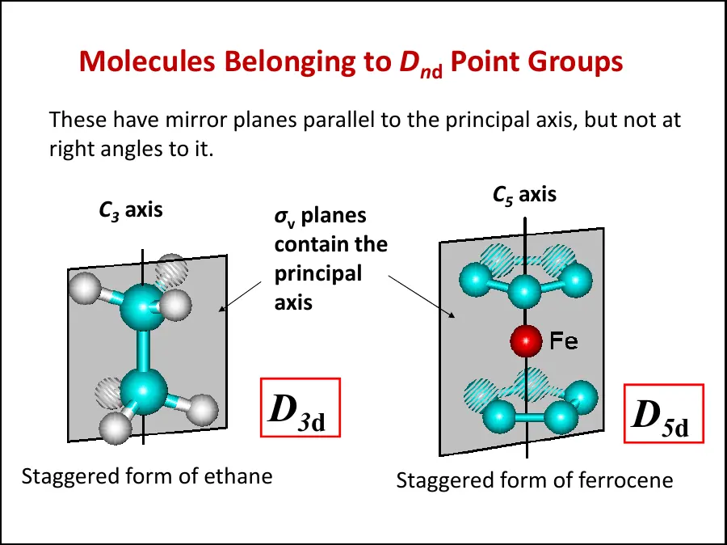
7.7 C/D 家族对照表
一行判定口诀
先找 Cn，再问有无 nC₂⊥：无则 C，有则 D；最后才看镜面。C 系有 σv → Cnv，有 σh → Cnh；D 系有 σh → Dnh，无 σh而有 σd → Dnd。
8. 特殊点群：C₁、Cs、Ci 与高对称群
C₁ 只有恒等操作 E，是最低对称性；一个四面体碳连四种不同取代基时通常为 C₁。Cs 除 E 外只有一个镜面；平面但不具任何旋转轴或反演中心的低对称分子常落入 Cs。Ci 只有 E 和 i，虽不常见但概念上重要。判定树若找不到高阶轴，最后就要检查这三类。
另一端是立方类高对称点群：正四面体为 Td，正八面体或立方体为 Oh，正二十面体或正十二面体为 Ih。它们具有多根等价高阶轴，没有唯一主轴，必须在判定树前部单独识别。CH₄ 属 Td，SF₆ 属 Oh，C₆₀ 近似 Ih。
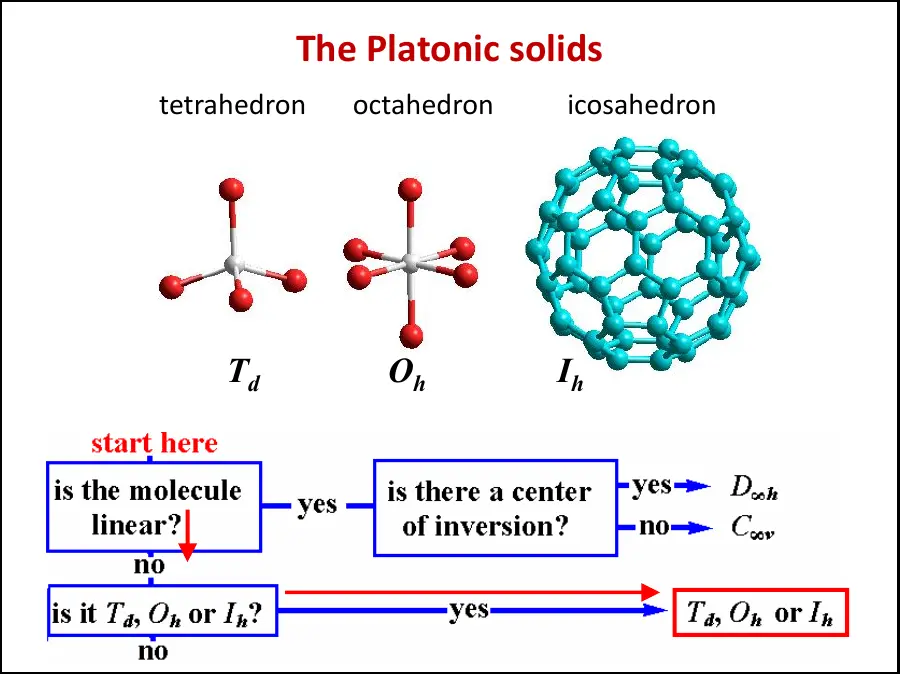
9. 线性分子：C∞v 与 D∞h
任何理想线性分子都具有沿分子轴的 C∞。若还有反演中心，则属于 D∞h；若没有反演中心，则属于 C∞v。同核双原子分子 N₂、O₂、F₂、H₂ 以及中心对称的 CO₂ 属 D∞h；异核双原子 CO、HI 以及 HCN 属 C∞v。
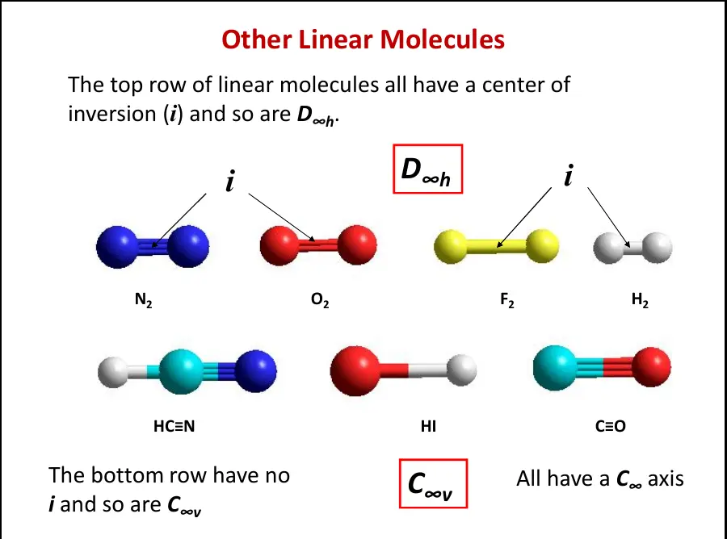
这里的“∞”表示绕分子轴转任意角度都不改变核排布。D∞h 还具有无穷多根垂直 C₂、一个 σh 和无穷多个包含分子轴的镜面；C∞v 没有垂直 C₂ 和 i，但保留无穷多个 σv。在振动自由度计数中，线性分子只有两个独立转动自由度，因此正常振动数为 3N−5，而非线性分子为 3N−6。
10. 一棵能实际使用的点群判定树
- 分子是否线性？
是：检查 i，分别归 D∞h 或 C∞v；否：继续。
- 是否为 T、O、I 类高对称多面体？
识别正四面体、正八面体/立方体、正二十面体类结构及其带 h、d 的具体群。
- 是否存在 Cn 主轴？
没有：检查 i 或 σ，得到 Ci、Cs；两者都无则 C₁。
- 是否有 n 根垂直于主轴的 C₂？
有则进入 D 系；没有则进入 C 系。
- D 系如何加后缀？
有 σh → Dnh；无 σh但有 σd → Dnd；都无 → Dn。
- C 系如何加后缀？
有 σh → Cnh；有包含主轴的 σv → Cnv；都无 → Cn。若主要元素是 S2n，归入 S2n。
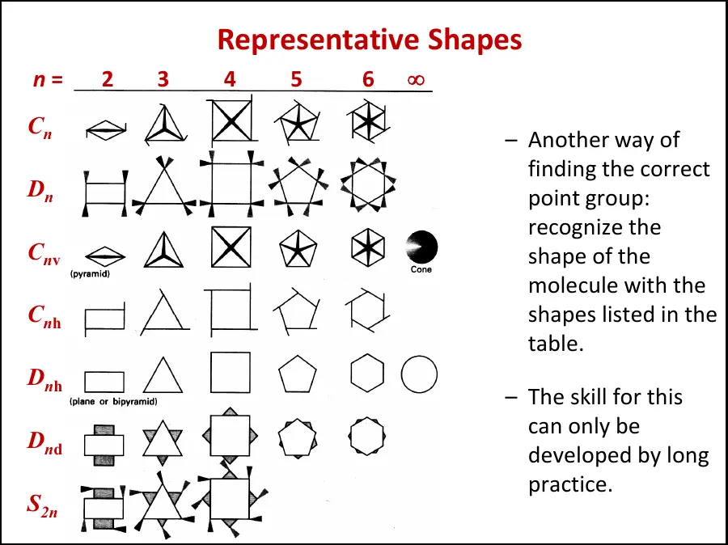
11. 高频分子逐个判定
非线性；一根 C₂；无垂直 C₂；有两个包含主轴的 σv，无 σh。
一根 C₃；无三根垂直 C₂；三个 N–H 平面都是 σv。
C₃ 主轴 + 三根垂直 C₂，先判 D₃；分子平面是 σh，故 D₃h。
C₆ 主轴 + 六根平面内 C₂；分子平面为 σh，另有 σv、σd 与 i。
C₃ 主轴 + 三根垂直 C₂；无 σh，但有三个 σd 和 i。
C₃ 主轴 + 三根垂直 C₂；垂直于 C₃ 且位于两组 H 中间的平面为 σh。
平面正方形：C₄ + 四根垂直 C₂ + 分子平面 σh，中心 Xe 处有 i。
跷跷板形：保留一根 C₂ 和两个 σv，孤对电子破坏更高对称性。
正四面体，具有多根 C₃ 和 C₂，没有唯一主轴；不要误判为 D₂d。
正八面体，具有三根 C₄、四根 C₃，并有反演中心。
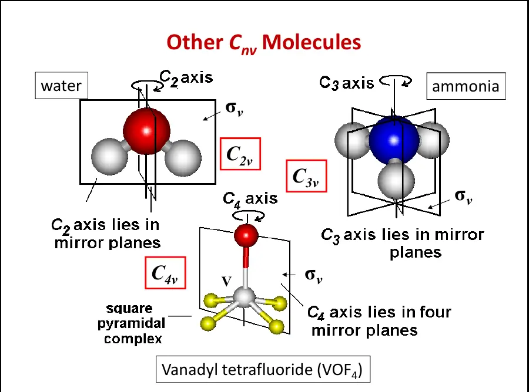
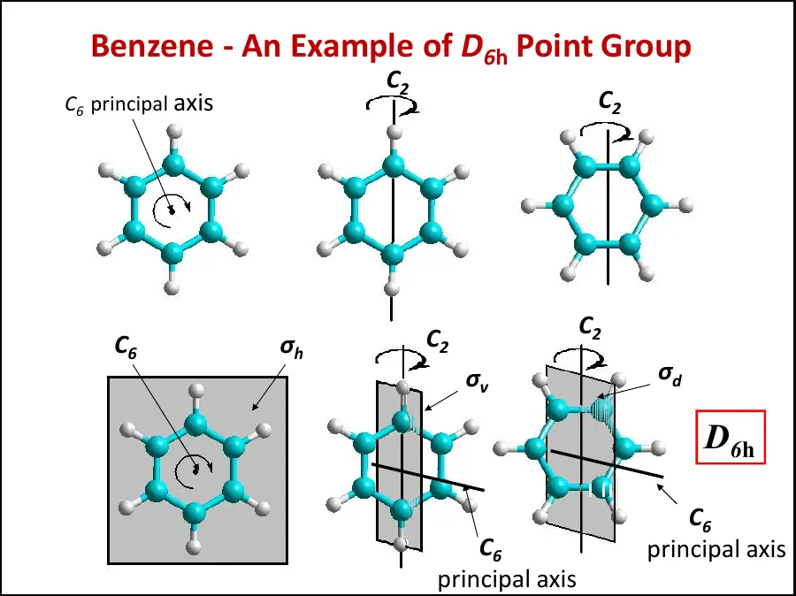
12. 群的四条规则与“为什么叫群”
一组对称操作必须满足四条群公理。第一，含恒等元 E，使 EA=AE=A；第二，每个操作 A 有逆操作 A⁻¹，使 AA⁻¹=E；第三，任意两个群内操作的复合仍属于该群，即封闭性；第四，复合满足结合律 A(BC)=(AB)C。操作通常不满足交换律，因此 AB 不一定等于 BA。
以 C₂v 为例，C₂²=E，每个镜面反射两次也回到 E；σv(xz)σv(yz)=C₂。把操作写成作用于坐标的矩阵后，群乘法就变成矩阵乘法。例如 C₂(z) 的矩阵为 diag(−1,−1,1)，σ(xz) 为 diag(1,−1,1)，σ(yz) 为 diag(−1,1,1)。这些矩阵的迹就是特征标。
13. 如何读 C₂v 特征标表
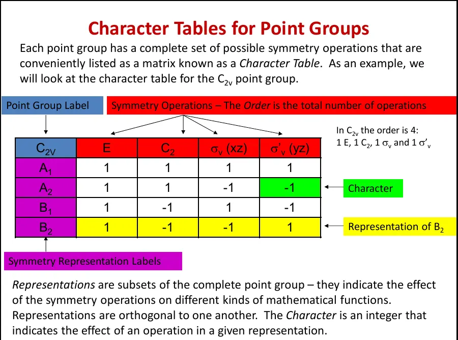
表头 E、C₂、σv(xz)、σ′v(yz) 是操作类；A₁、A₂、B₁、B₂ 是不可约表示。A 或 B 表示一维表示，E 表示二维简并，T 表示三维简并。对一维表示，字符 +1 表示基函数经该操作不变，−1 表示变号。A 对主轴旋转对称，B 对主轴旋转反对称；下标 1/2 再按垂直 C₂ 或指定 σv 的对称性区分。
右侧的 x、y、z 对应平移与偶极矩分量，Rx、Ry、Rz 对应转动，x²、y²、z²、xy、xz、yz 对应极化率张量分量。以课件坐标约定为例，z 属 A₁，x 属 B₁，y 属 B₂，Rz 属 A₂。坐标轴若重新命名，B₁/B₂ 可能交换，所以做题必须先固定 z 为主轴及分子所在平面。
特征标 0 不是“没有作用”
二维或更高维基函数经操作后可能彼此混合，矩阵迹恰好为 0。例如 C₃v 的二维 E 表示中，(x,y) 在 C₃ 下互相线性组合，字符为 −1；在 σv 下一个分量不变、另一个变号，迹为 0。
14. 可约表示怎样分解
把一组键、轨道或 3N 个笛卡尔位移作为基，可以得到可约表示 Γ。其字符通常通过“操作后仍留在原位置的基函数贡献相加”求得；被移到另一位置的基函数对迹贡献为 0，留在原位但变号的贡献为 −1。随后用约化公式计算每个不可约表示出现次数：
点群的阶等于全部操作数；不可约表示数等于操作类数；各不可约表示维数平方之和等于群阶。不同不可约表示的字符向量在按类大小加权的内积下正交。这些性质既是计算工具，也是查表时的错误检查。
C₂v 的坐标表示
三维坐标 (x,y,z) 对 E、C₂、σ(xz)、σ(yz) 的字符为 (3,−1,1,1)。分解得到 A₁+B₁+B₂，正好对应 z、x、y；没有 A₂，因为普通极矢量的三个分量都不按 Rz 的方式变换。
15. 对称性怎样决定轨道能否成键
两个轨道若要产生非零重叠，必须在相关对称操作下具有相容的变换性质；更严格地说，它们的直积必须包含全对称表示。于是群论能够先筛除“因对称性必为零”的相互作用，再由能量匹配和空间重叠决定剩余相互作用强弱。
构造配体群轨道（SALC）时，先把等价配体轨道作为基求 Γ，再分解为不可约表示。中心原子只有同对称性的 s、p、d 轨道才能与对应 SALC 混合。例如平面三角形 SO₃ 的三个 σ 配体方向形成 A₁′+E′：中心 S 的 s 属 A₁′，(px,py) 属 E′，因此从对称性上允许参与 σ 成键。
“对称性允许”不等于“实际贡献显著”。轨道仍需能量接近、空间重叠充分。第三章讨论超价分子时，这一点尤其关键：某些 d 轨道虽具有合适对称性，但能量过高、径向尺度不匹配，不能据此宣称存在强 d 轨道成键。
16. 极性与手性：点群的一眼结论
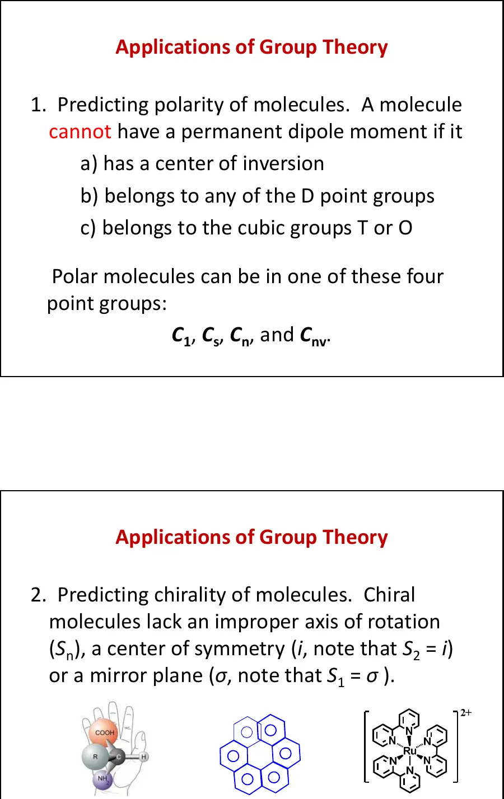
永久偶极矩是极矢量，必须沿某个在全部操作下保持不变的方向。C₁、Cs、Cn、Cnv 点群允许极性；所有 D 类、T/O/I 类以及含 i 的群都不允许永久偶极矩。允许只代表对称性不强迫其为零，实际数值仍可能因偶然抵消很小。
手性判定更简洁：只含 E 和正旋转 Cn 的点群可能手性，即常见 C₁、Cn、Dn。一旦存在 σ、i 或其他 Sn，镜像就能通过非真操作与原物重合，分子不具构型手性。[Co(en)₃]³⁺ 的理想构型为 D₃，可形成 Δ/Λ 对映体；而交错乙烷虽有扭转外观，却属 D₃d、含 i 和 S₆，不是手性分子。
17. 分子振动：3N−6 与 3N−5 从哪里来
N 个原子在三维空间共有 3N 个笛卡尔位移自由度。整体平移占 3 个；非线性分子整体转动占 3 个，故正常振动数为 3N−6。线性分子绕自身分子轴转动不改变核位置，只有两个有效转动自由度，因此有 3N−5 个振动。
求 Γ₃N 时，对每个对称操作只检查未被移动的原子；被换到其他位置的原子对矩阵迹贡献 0。对于仍留在原位的原子，考察其 x、y、z 三个位移方向：保持方向贡献 +1，反向贡献 −1，旋转混合则按变换矩阵取迹。将 Γ₃N 约化后，再根据特征标表右侧的 x/y/z 与 Rx/Ry/Rz 删去平移和转动。
18. 水分子的完整振动例题
H₂O 属 C₂v，N=3，因此有 3×3−6=3 个正常振动。以 z 为 C₂ 轴、分子位于 xz 平面，课件得到 Γ₃N=(9,−1,3,1)，约化为 3A₁+A₂+3B₁+2B₂。平移为 A₁+B₁+B₂，转动为 A₂+B₁+B₂，扣除后：
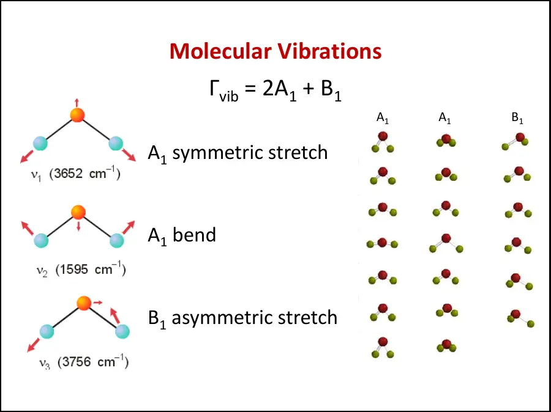
IR 活性要求振动与 x、y 或 z 中至少一个同对称，因为振动必须引起偶极矩变化；Raman 活性要求与 x²、y²、z²、xy、xz、yz 中至少一个同对称，因为振动必须改变极化率。C₂v 表中 A₁ 含 z 和平方函数，B₁ 含 x 与 xz，因此水的三个模式均同时具有 IR 与 Raman 活性。
19. IR、Raman 与中心对称互斥规则
红外吸收强度来自振动过程中偶极矩的一阶变化，Raman 散射强度来自极化率的一阶变化。偶极矩分量 x、y、z 在反演下为奇（u）；二次函数构成的极化率分量在反演下为偶（g）。因此含反演中心的分子中，一个正常模式不可能同时与奇函数和偶函数同对称，这就是互斥规则。
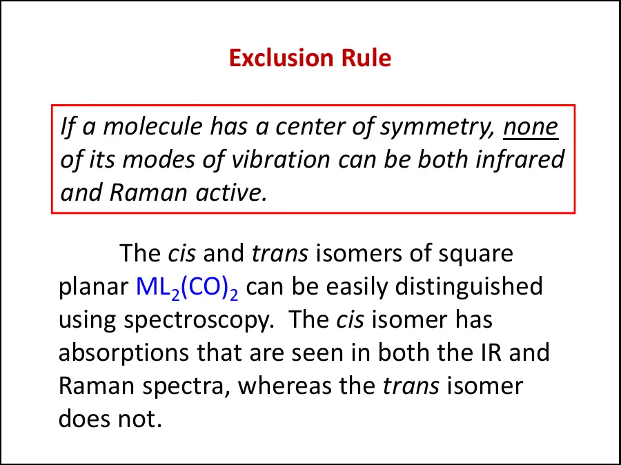
互斥规则是用光谱判断结构的利器。无反演中心的分子可以存在同时 IR/Raman 活性的模式；有反演中心的分子则把模式分成 IR 活性的 u 类和 Raman 活性的 g 类。实验峰数还可能受简并、偶然重合、强度过弱、选择定则放宽及样品相态影响，所以不能机械地把理论模式数等同于清晰可见峰数。
20. cis/trans-ML₂(CO)₂：用光谱区分几何异构体
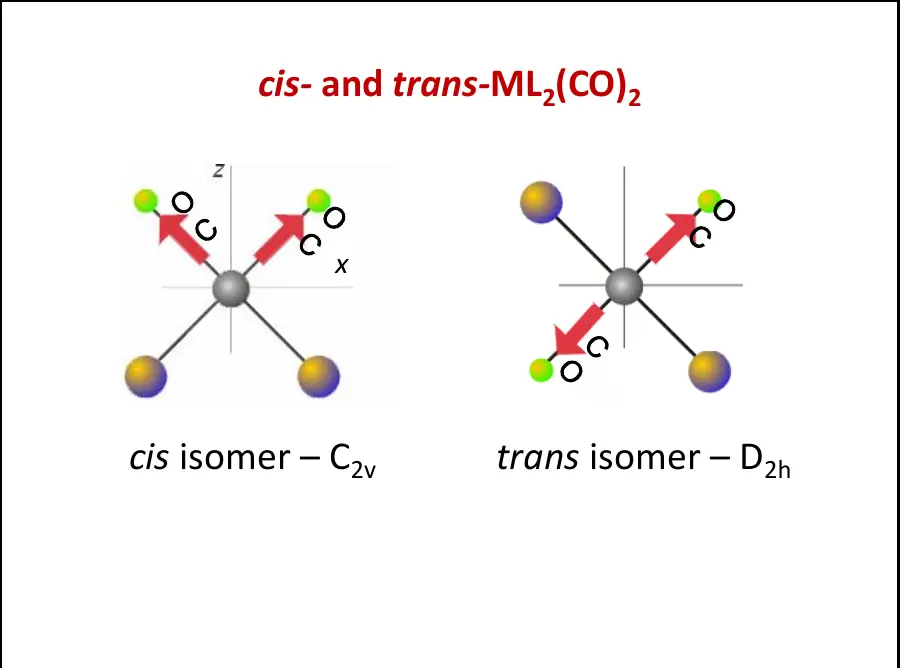
平面正方形 cis-ML₂(CO)₂ 属 C₂v。两个 CO 伸缩坐标给出 ΓCO=A₁+B₁：对称伸缩和反对称伸缩均与极矢量分量同对称，也都与二次函数同对称，因此两种模式均可同时出现在 IR 与 Raman 中。
trans-ML₂(CO)₂ 属 D₂h，具有反演中心。两个 CO 伸缩分解为 Ag+B3u：同相伸缩 Ag 为 Raman 活性，反相伸缩 B3u 为 IR 活性，任何一个模式都不会两者兼有。于是联合观察 IR 与 Raman 可区分 cis/trans 构型，这比只背峰数更可靠。
同样的思路适用于终端与桥联羰基、金属羰基簇以及配合物异构体。首先确定几何和点群，再选取与目标键伸缩相关的局部坐标作为基，不必每次都处理完整 3N 位移。
21. 常见误区与考试速查
- 对称操作后不要求每个原子回到原编号，只要求同种原子互换后整体不可区分。
- E 不是 C₁ 轴；E 是恒等操作。C₁ 点群表示除 E 外没有非平凡操作。
- 主轴是阶数最高的 Cn；同一几何轴可同时执行 Cn 的不同幂。
- σh、σv、σd 必须相对主轴命名；σd 还要平分垂直 C₂ 轴间夹角。
- i 不是 C₂：反演使三个坐标全部变号，C₂ 保留轴向坐标。
- Sn 的顺序是“转 360°/n，再关于垂直平面反射”；S₁=σ，S₂=i。
- 有 Cn 后必须继续寻找 n 根垂直 C₂；这是区分 C 系与 D 系的关键。
- 有 σh 的 D 群写 Dnh；没有 σh但有 σd 才写 Dnd。
- 线性分子有 i 才是 D∞h；异核线性分子通常是 C∞v。
- 含 σ、i 或任何 Sn 的分子不具有构型手性；C₁、Cn、Dn 才可能手性。
- “对称性允许轨道混合”只是必要条件，还必须满足能量与空间重叠。
- IR 活性看 x/y/z，Raman 活性看二次函数；有 i 时遵循互斥规则。
- Γ₃N 中被操作移位的原子贡献 0；只有留在原位的原子才按坐标方向求迹。
- 不要把简并模式数直接当峰数；一组二维 E 模式通常给一个频率、包含两个简并振动。
22. 本章作业与练习顺序
课件指定教材第 4 章习题 4.24–4.29，提交日期为 2026 年 10 月 16 日。建议按三层训练：先只看结构完成点群判定；再给定特征标表完成轨道/坐标标签；最后处理 Γ 的构造、约化以及 IR/Raman 活性。若第一层不稳，后两层的矩阵计算会建立在错误点群上，算得再熟也无效。
自测可按由易到难排列：H₂O、NH₃、BF₃、CO₂、HCN、XeF₄、交错与重叠乙烷、苯、[Co(en)₃]³⁺、[ZrF₈]⁴⁻。每个例子至少写出主轴、垂直 C₂、σh/σv/σd、i、Sn 五栏，再给点群；这样比凭轮廓猜点群更稳。